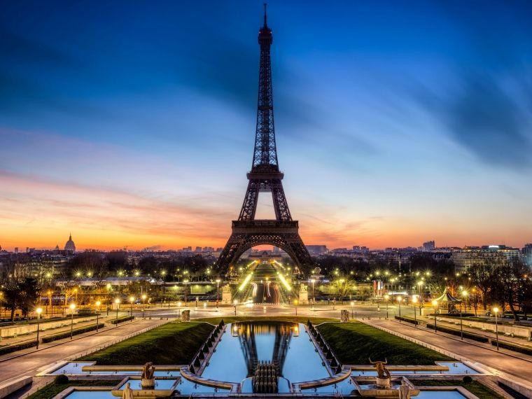
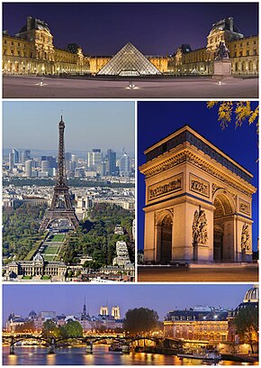
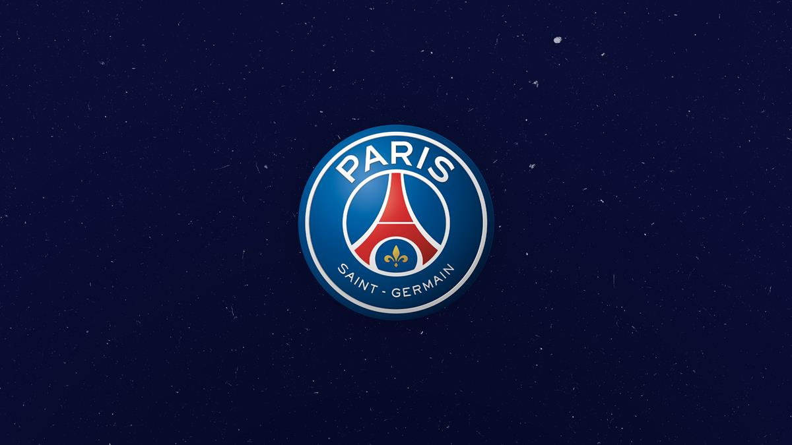

PARIZ
istorija Pariza
Istorija Pariza - Prvi ljudi koji su se naselili na obalama reke Sene bili su galsko pleme u 3. veku pre nove ere.
Pariz je postao glavni grad Francuske 987. godine, a jedan od najpoznatijih vladar bio je Luj XIV, poznat i kao Luj Veliki ili Kralj Sunce.
Pariz je bio mesto gde je počela Francuska revolucija.
Zauzeli su ga nacisti 1940. godine, ali je oslobođen 25. avgusta 1944.
Danas je jedan od vodećih svetskih gradova.

Lista destinacija
- Ajfelova kula
- simbol Pariza. To je najposećeniji spomenik na svetu za koji je potrebno platiti ulaznicu.
Nalazi se na Marsovom polju i građena je od 1887. do 1889.
- Muzej Luvr
- najposećeniji muzej na svetu. To je dom Mona Lize, između ostalih poznatih umetničkih dela.
Nalazi se u prvom arondismanu.
- Katedrala Noter Dame
- srednjovekovna katolička katedrala. Najistaknutiji je po svojoj veličini i arhitektonskom stilu.
Nalazi se u četvrtom arondismanu Pariza

| klub |
pobednik |
| Lyon |
1 |
| PSG |
2 |
